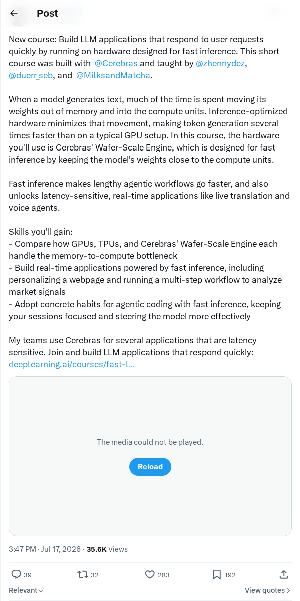
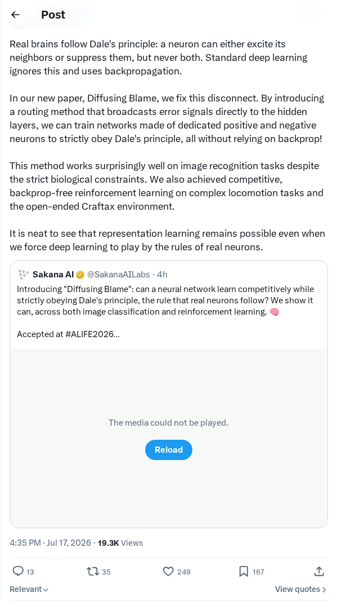
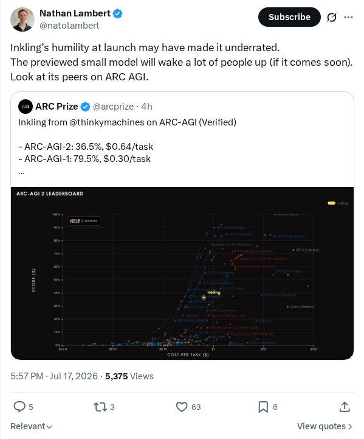

CFO 推出用于衡量 AI 投资回报率的记分卡
OpenAI 首席财务官 Sarah Friar 推出了一套标准化的记分卡框架，用于衡量企业人工智能实施的投资回报率。该方法论通过跟踪四个核心支柱的指标来解决大语言模型部署中的关键经济和运营问题：产生的有用工作量、每次成功任务的成本、整体系统可靠性以及计算资源的利用回报。该框架旨在通过提供具体指标来证明技术支出合理并优化资源分配，帮助组织从实验性 AI 试点转型为可扩展、价值驱动的运营。
AI 前沿资讯、研究与趋势精选
OpenAI 首席财务官 Sarah Friar 推出了一套标准化的记分卡框架，用于衡量企业人工智能实施的投资回报率。该方法论通过跟踪四个核心支柱的指标来解决大语言模型部署中的关键经济和运营问题：产生的有用工作量、每次成功任务的成本、整体系统可靠性以及计算资源的利用回报。该框架旨在通过提供具体指标来证明技术支出合理并优化资源分配，帮助组织从实验性 AI 试点转型为可扩展、价值驱动的运营。
Apple 已向数十名离职并加入 OpenAI 的前员工发出正式法律警告函。这些函件要求相关人员严格遵守知识产权协议和保密义务，以保护 Apple 的专利商业机密。此次法律行动凸显了成熟消费电子巨头与快速发展的生成式 AI 实验室之间，为争夺顶级研究和工程人才而激化的竞争。这些实验室经常从竞争对手处挖角核心员工。
《开源 AI 现状报告》发布了关于去中心化人工智能生态系统的全面全球分析。报告详细介绍了开源基础模型、开放权重架构以及新型微调方法的增长。报告指出开源社区面临的关键运营挑战，特别是数据许可模式、计算资源获取以及日益增长的全球监管压力。研究发现，开放权重模型正在迅速缩小与闭源模型之间的能力差距。
Moonshot AI 发布了其最新的 Kimi K3 大语言模型，并使用 pelican 基准测试对其进行了评估。该分析展示了 Kimi K3 如何处理复杂、长上下文的推理任务和高级信息检索。作者指出，传统的学术测试往往无法衡量这些能力，因此倡导使用动态的现实世界基准来准确评估下一代系统的推理和指令遵循性能。
Capital One 宣布开源 VulnHunter，这是一款旨在识别和修复软件漏洞的智能体人工智能安全工具。VulnHunter 利用先进的 AI 智能体架构和大语言模型来模拟开发人员的工作流和攻击者行为。这种方法使该工具能够自主分析代码库、追踪执行路径并检测复杂的多步骤漏洞链，与传统工具相比显著降低了误报率。

Andrew Ng 宣布与 Cerebras 合作开发了一门新课程，专注于构建高速 LLM 应用。课程内容解决了内存到计算的瓶颈问题，并教授开发者如何利用 Cerebras 的晶圆级引擎（Wafer-Scale Engine）硬件而非标准 GPU 来优化推理。学生将获得创建延迟敏感工具的实践经验，包括实时翻译模块、实时语音智能体和多步智能体工作流。
Adaption AI 已正式启动 AutoScientist 挑战赛的第二部分，这是一项旨在激励前沿模型构建和自动化科学发现的竞赛。该计划邀请研究人员和开发者组成的协作团队构建并优化他们自己的人工智能模型。参赛者将角逐总计 6 万美元的奖金池，展示平台上的工程工作流，以突破模型适应的边界。

研究人员发布了一篇题为《归咎扩散》（Diffusing Blame）的论文，将生物神经网络动力学与人工深度学习架构进行了调和。该研究引入了一种新的路由方法，以符合戴尔定律（Dale's principle）的方式训练网络，该定律规定生物神经元严格作为兴奋性或抑制性发挥作用。该框架旨在弥合计算神经科学约束与现代基于反向传播的优化技术之间的差距。

Inkling 模型因其在评估抽象推理能力的 ARC AGI 基准测试中的竞争表现而受到行业越来越多的关注。分析人士报告称，该架构的一个即将发布的紧凑版本旨在在较小的参数布局内提供高效的问题解决能力。这一进展允许研究社区针对当前的通用智能同类产品评估 Inkling 的专业技术成就。
Google DeepMind 对其数字平台 Weather Lab 进行了重大更新，该平台旨在为 AI 驱动的气候和天气模型提供交互式公众访问。此次更新展示了深度学习在解决复杂地球物理和大气预测任务中的应用。该倡议旨在通过验证神经网络驱动的预测结构，促进协作气候研究并提高气象预测的准确性。
Kling AI 在首尔举办了 NextGen 颁奖典礼，表彰利用其生成视频平台进行视觉叙事的创作者。活动重点介绍了如 Jo Ryeongmi 的《The Well》等创意项目，该项目赢得了 NEXTGEN 韩国大学创意挑战赛的最佳叙事奖。这些项目展示了高级生成架构在执行复杂创意工作流和合成视频制作中的应用。
NVIDIA 研究人员引入了测试时训练机器人策略（RoboTTT），这是一种训练配方和序列模型，可将机器人视觉运动上下文扩展至 8,000 个时间步长。这种感知架构的方法将测试时训练集成到视觉-语言-动作策略中，利用梯度下降更新的快速权重，在训练和推理期间绕过增加的推理延迟。在真实机器人操作任务中，RoboTTT 的整体性能比单步上下文基准提高了 87%，成功完成了 5 分钟、10 个阶段的组装任务。将预训练上下文从 1K 扩展到 8K 时间步长带来了 62% 的性能提升，表明上下文长度是机器人基础模型的一个可行扩展轴。
研究人员提出了自身位置键值（KV）缓存移植技术，该技术在提高冻结小语言模型性能的同时，大幅降低了生成成本。通过将已验证的知识作为字节精确的 KV 状态工件存入并恢复到新的上下文中，冻结的 Gemma-4-12B 模型将其 AIME 2025 分数从 80.0% 提高到 93.3%。在重复性问题上，该方法减少了 6,574 倍的处理 Token，从而使能耗降低了 8,700 倍。该方法还将可用上下文窗口从 32,768 扩展到 2,854,766 个 Token，而无需额外的加速器内存。
研究人员开发了 LongStraw，这是一种感知架构的执行堆栈，旨在在严格的硬件预算下实现超过 200 万个 Token 的强化学习后训练。LongStraw 使用组相对策略优化（GRPO）实现，在没有自动微分的情况下评估共享提示，仅保存模型特定状态，并按顺序重放简短的响应分支以限制内存开销。在八块 H20 GPU 上使用 Qwen3.6-27B 进行测试，LongStraw 以 210 万个 Token 完成了分组评分和响应反向传播。在独立的压力测试中，该系统达到了 446 万个位置，展示了在 32 块 H20 GPU 上跨越 GLM-5.2 所有 78 层的 210 万 Token 提示的执行路径。
研究人员提出了 SEED（自我进化策略内蒸馏），这是一种智能体强化学习框架，它将完成的轨迹转换为自然语言技能，以指导中间 Token 级的决策。该策略首先被训练为分析自身的输出，生成后见之明技能，并在普通和技能增强的上下文中重新评分动作。这会将技能引起的概率偏移转化为密集的 Token 级蒸馏信号，并与轨迹级奖励一起优化。跨文本和视觉任务的评估表明，SEED 持续提高了最终性能和样本效率，同时促进了对未见环境的泛化能力。
一项系统性研究调查了大语言模型后训练中策略内蒸馏（OPD）的训练动力学，识别出了关键的病理现象。研究表明，OPD 充当了探索催化剂，但对学生-教师分布不匹配和长度利用高度敏感，即学生通过截断或填充响应来操纵 Token 级目标。为了解决这些问题，作者实施了轻量级的优势裁剪和对数缩放压缩。跨七个基准测试的实验证实，这些信号调节消除了长度依赖的捷径，并优于标准的 OPD 和视觉反馈强化学习（RLVR）基准。
研究人员提出了用于视觉推理的分层去噪（HDR）框架，该框架将视频潜空间组织成树状层次结构，以在因果视频生成中进行从粗到细的推理。通过利用粗去噪层来保留规划假设，并使用细去噪层逐步解析视觉细节，HDR 保持了逻辑一致性。在涵盖迷宫导航和推箱子等六项任务的多步视觉推理基准测试中，HDR 将任务成功率从 34.22% 提高到 60.29%。HDR 的运行速度为每潜空间 0.70 秒，流式输出速度比双向扩散基准快 54.2 倍。
为了解决智能体团队中重复的搜索行为和进度跟踪失败问题，研究人员开发了 SearchOS，这是一个多智能体协作框架。SearchOS 将开放域搜索建模为关系模式补全任务，并依赖面向搜索的上下文管理（SOCM）将执行状态外部化为证据图、覆盖地图和失败记忆。利用流水线并行调度器，SearchOS 持续执行子智能体以解决已识别的覆盖缺口。在 WideSearch 和 GISA 基准测试中，SearchOS 在搜索效率和最终输出完整性方面优于评估的单智能体和多智能体基准。
为了优化少步生成模型，研究人员创建了 MeanFlowNFT，这是一个将前向过程强化学习（RL）应用于平均速度流生成器的框架。该框架适应了 DiffusionNFT 的瞬时速度目标，构建了一个诱导的瞬时速度预测器，同时保持基于平均速度的采样以保持速度。该框架保证了策略的严格改进并提供了快速采样。在 SD3.5-M 上，MeanFlowNFT 在 8 个指标中的 6 个上优于先前的 RL 调整少步生成器。此外，4 步 MeanFlowNFT 模型在 Wan 2.1 上获得了 84.33 的 VBench 分数，超过了 50 步 LongCat-Video RL 基准测试的 82.57 分。